ENGINE UNIT > INSPECTION |
| 1. INSPECT CYLINDER HEAD SET BOLT |
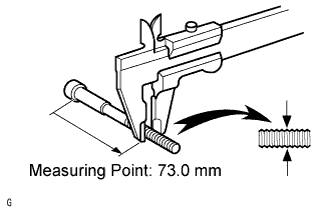 |
Using a vernier caliper, measure the outside thread diameter of the bolt.
| 2. CLEAN CYLINDER HEAD SUB-ASSEMBLY |
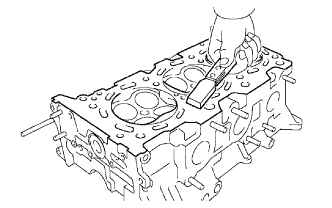 |
Using a gasket scraper, remove all the gasket material from the cylinder block contact surface.
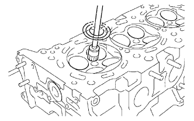 |
Using a wire brush, remove all the carbon from the combustion chambers.
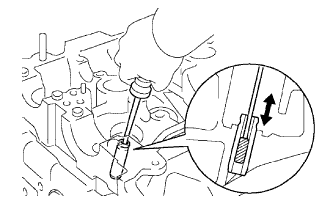 |
Using a valve guide bushing brush and solvent, clean all the valve guide bushes.
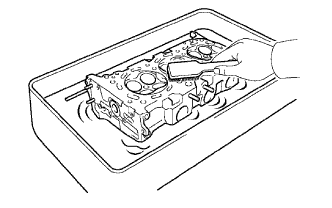 |
Using a soft brush and solvent, thoroughly clean the cylinder head.
| 3. INSPECT CYLINDER HEAD SUB-ASSEMBLY |
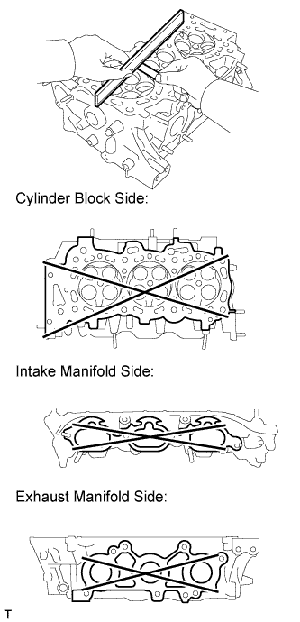 |
Using a precision straightedge and feeler gauge, measure the warpage of the contact surfaces of the cylinder block and manifolds.
| Item | Specified Condition |
| Cylinder block side | 0.05 mm (0.00197 in.) |
| Intake manifold side | 0.08 mm (0.00315 in.) |
| Exhaust manifold side | 0.08 mm (0.00315 in.) |
| Item | Specified Condition |
| Cylinder block side | 0.10 mm (0.00394 in.) |
| Intake manifold side | 0.10 mm (0.00394 in.) |
| Exhaust manifold side | 0.10 mm (0.00394 in.) |
 |
Using a dye penetrant, check the intake ports, exhaust ports and cylinder surface for cracks.
If there are cracks, replace the cylinder head sub-assembly.
| 4. CLEAN VALVE |
 |
Using a gasket scraper, chip off any carbon from the valve head.
Using a wire brush, thoroughly clean the valve.
| 5. INSPECT VALVE |
 |
Using a micrometer, measure the diameter of the valve stem.
| Item | Specified Condition |
| Intake | 5.470 to 5.485 mm (0.2154 to 0.2159 in.) |
| Exhaust | 5.465 to 5.480 mm (0.2152 to 0.2156 in.) |
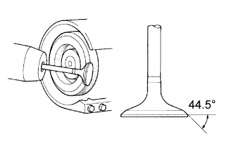 |
Inspect the valve face angle.
Grind the valve enough to remove pits and carbon.
Check that the valve is ground to the correct valve face angle.
 |
Using a vernier caliper, measure the valve head margin thickness.
Using a vernier caliper, check the valve head margin thickness.
 |
Using a vernier caliper, measure the overall length of the valve.
Using a vernier caliper, check the overall length.
| Item | Specified Condition |
| Intake | 106.95 mm (4.21 in.) |
| Exhaust | 105.80 mm (4.15 in.) |
| Item | Specified Condition |
| Intake | 106.40 mm (4.19 in.) |
| Exhaust | 105.30 mm (4.15 in.) |
 |
Inspect the valve stem tip.
Check the surface of the valve stem tip for wear.
| 6. CLEAN VALVE SEAT |
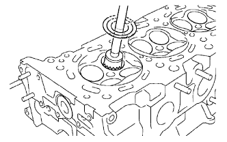 |
Using a 45° carbide cutter, resurface the valve seats.
Clean the valve seats.
| 7. INSPECT VALVE SEAT |
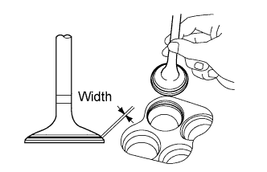 |
Apply a light coat of Prussian blue to the valve face.
Lightly press the valve face against the valve seat.
Check the valve face and valve seat by using the following procedure.
If Prussian blue appears around the entire valve face, the valve face is concentric. If not, replace the valve.
If Prussian blue appears around the entire valve seat, the guide and valve face are concentric. If not, resurface the valve seat.
Check that the seat contacts the middle of the valve face with the width below.
| 8. INSPECT INNER COMPRESSION SPRING |
 |
Using a steel square, measure the deviation of the inner compression spring.
 |
Using a vernier caliper, measure the free length of the inner compression spring.
 |
Using a spring tester, measure the tension of the inner compression spring at the standard installed length.
| 9. INSPECT VALVE GUIDE BUSH OIL CLEARANCE |
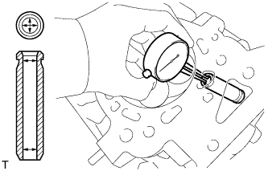 |
Using a caliper gauge, measure the inside diameter of the guide bush.
Subtract the valve stem diameter measurement from the guide bush inside diameter measurement.
| Item | Specified Condition |
| Intake | 0.025 to 0.060 mm (0.000984 to 0.00236 in.) |
| Exhaust | 0.030 to 0.065 mm (0.00118 to 0.00256 in.) |
| Item | Specified Condition |
| Intake | 0.08 mm (0.00315 in.) |
| Exhaust | 0.10 mm (0.00394 in.) |
| 10. INSPECT VALVE LIFTER |
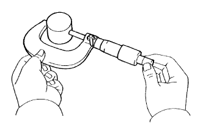 |
Using a micrometer, measure the valve lifter diameter.
| 11. INSPECT VALVE LIFTER OIL CLEARANCE |
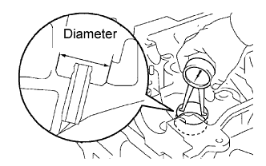 |
Using a caliper gauge, measure the lifter bore diameter of the cylinder head.
Subtract the valve lifter diameter measurement (see "Inspect Valve Lifter" procedure) from the lifter bore diameter measurement.
| 12. INSPECT CAMSHAFT THRUST CLEARANCE |
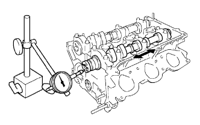 |
Install the camshafts (Click here).
Using a dial indicator, measure the thrust clearance while moving the camshaft back and forth.
| 13. INSPECT CAMSHAFT OIL CLEARANCE |
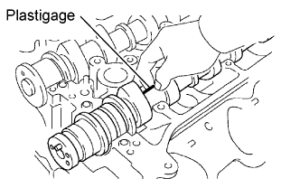 |
Clean the camshaft bearing caps, camshaft bearings and camshaft journals.
Install the camshaft bearing (Click here).
Place the camshafts on the cylinder head.
Lay a strip of Plastigage across each of the camshaft journals.
Install the camshaft bearing caps (Click here).
Remove the camshaft bearing caps (Click here).
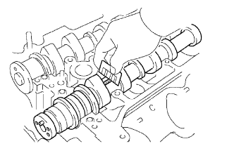 |
Measure the Plastigage at its widest point.
| Item | Specified Condition |
| No. 1 (Intake) | 0.008 to 0.038 mm (0.000315 to 0.00150 in.) |
| No. 1 (Exhaust) | 0.040 to 0.079 mm (0.00157 to 0.00311 in.) |
| Others | 0.025 to 0.062 mm (0.000984 to 0.00244 in.) |
| Item | Specified Condition |
| No. 1 | 0.040 to 0.079 mm (0.00157 to 0.00311 in.) |
| Others | 0.025 to 0.062 mm (0.000984 to 0.00244 in.) |
| Item | Specified Condition |
| No. 1 (Intake) | 0.07 mm (0.00276 in.) |
| Others | 0.10 mm (0.00394 in.) |
| Item | Specified Condition |
| - | 0.10 mm (0.00394 in.) |
| Item | Specified Condition |
| Cylinder head journal bore diameter | 40.009 to 40.017 mm (1.5752 to 1.5755 in.) |
| Camshaft bearing center wall thickness (Mark "2") | 2.004 to 2.008 mm (0.0789 to 0.0791 in.) |
| Camshaft journal diameter | 35.971 to 35.985 mm (1.4162 to 1.4167 in.) |
Remove the Plastigage completely.
Remove the camshafts.
Remove the camshaft bearing.
| 14. INSPECT CAMSHAFT |
 |
Inspect the camshaft runout.
Place the camshaft on V-blocks.
Using a dial indicator, measure the runout at the center journal.
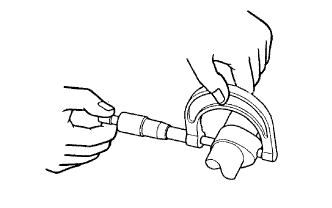 |
Inspect the cam lobes.
Using a micrometer, measure the cam lobe height.
| Item | Specified Condition |
| Intake | 44.168 to 44.268 mm (1.739 to 1.742 in.) |
| Exhaust | 44.580 to 44.680 mm (1.755 to 1.759 in. |
| Item | Specified Condition |
| Intake | 44.018 mm (1.73 in.) |
| Exhaust | 44.430 mm (1.75 in.) |
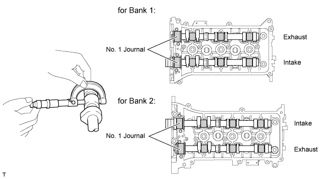
Inspect the camshaft journals.
Using a micrometer, measure the journal diameter.
| Item | Specified Condition |
| No. 1 | 35.971 to 35.985 mm (1.416 to 1.417 in.) |
| Other | 22.959 to 22.975 mm (0.904 to 0.905 in.) |
| 15. INSPECT CAMSHAFT TIMING GEAR ASSEMBLY |
Fix the intake camshaft with a vise.
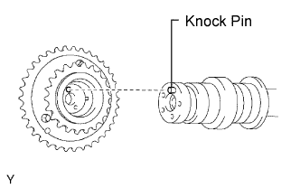 |
Align the knock pin hole in the camshaft timing gear with the knock pin of the camshaft, and install the camshaft timing gear with the bolt.
Confirm the camshaft timing gear is locked.
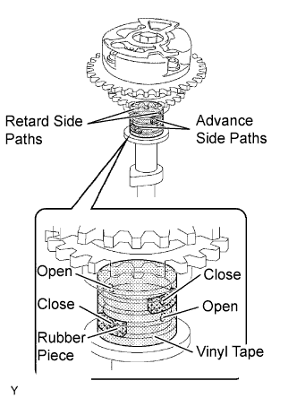 |
Release the lock pin.
Cover the 4 oil paths of the cam journal with vinyl tape as shown in the illustration.
Prink a hole in the tape at the 2 oil holes not plugged with rubber pieces.
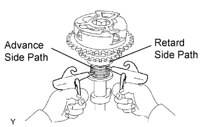 |
Apply about 200 kPa (2.0 kgf/cm2, 28 psi) of air pressure to the two broken paths (the advance side path and the retard side path).
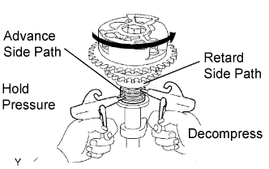 |
Confirm that the camshaft timing gear rotates in the advance direction when reducing the air pressure applied to the retard path.
When the camshaft timing gear comes to the most advanced position, release the air pressure from the retard side path, and then release the air pressure from the advance side path.
Check for smooth rotation.
Except the position where the lock pin meets at the most retarded angle, turn the camshaft timing gear back and forth and check the movable range and that there is no disturbance.
Check the lock in the most retarded position.
Confirm that the camshaft timing gear is locked at the most retarded position.
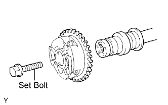 |
Remove the set bolt and camshaft timing gear.
| 16. INSPECT CONNECTING ROD BOLT |
 |
Using a vernier caliper, measure the tension portion diameter of the bolt.
| 17. INSPECT CRANKSHAFT BEARING CAP SET BOLT |
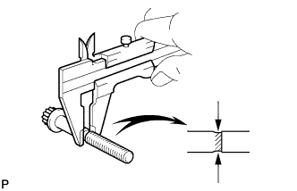 |
Using a vernier caliper, measure the tension portion diameter of the bolt.
| 18. INSPECT CYLINDER BLOCK FOR FLATNESS |
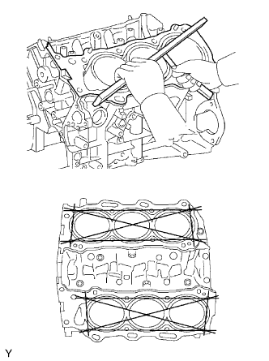 |
Using a precision straightedge and feeler gauge, measure the warpage of the contact surface of the cylinder head gasket.
| 19. INSPECT CYLINDER BORE |
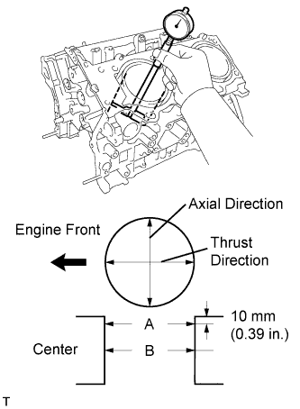 |
Using a cylinder gauge, measure the cylinder bore diameter at positions A and B in the thrust and axial directions.
| 20. INSPECT PISTON WITH PIN SUB-ASSEMBLY |
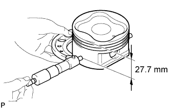 |
Using a micrometer, measure the piston diameter at a right angle to the piston pin center line, 27.7 mm (1.091 in.) from the piston head.
| 21. INSPECT PISTON OIL CLEARANCE |
Subtract the piston diameter measurement from the cylinder bore diameter measurement.
| 22. INSPECT PISTON PIN OIL CLEARANCE |
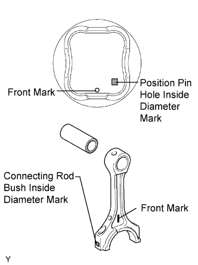 |
Check each mark on the piston and connecting rod.
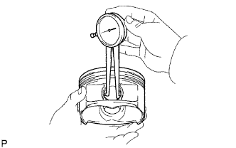 |
Using a caliper gauge, measure the inside diameter of the piston pin hole.
| Mark | Specified Condition |
| A | 22.001 to 22.004 mm (0.86618 to 0.86630 in.) |
| B | 22.005 to 22.007 mm (0.86634 to 0.86642 in.) |
| C | 22.008 to 22.010 mm (0.86645 to 0.86653 in.) |
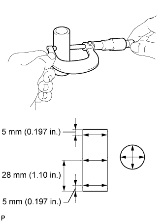 |
Using a micrometer, measure the piston pin diameter.
| Mark | Specified Condition |
| A | 21.997 to 22.000 mm (0.86602 to 0.86614 in.) |
| B | 22.001 to 22.003 mm (0.86618 to 0.86626 in.) |
| C | 22.004 to 22.006 mm (0.86630 to 0.86642 in.) |
 |
Using a caliper gauge, measure the inside diameter of the connecting rod bush.
| Mark | Specified Condition |
| A | 22.005 to 22.008 mm (0.86634 to 0.86645 in.) |
| B | 22.009 to 22.011 mm (0.86649 to 0.86657 in.) |
| C | 22.012 to 22.014 mm (0.86661 to 0.86669 in.) |
Subtract the piston pin diameter measurement from the piston pin hole diameter measurement.
Subtract the piston pin diameter measurement from the bush inside diameter measurement.
| 23. INSPECT RING GROOVE CLEARANCE |
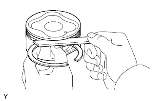 |
Using a feeler gauge, measure the clearance between a new piston ring and the wall of the ring groove.
| Item | Specified Condition |
| No. 1 Compression Ring | 0.02 to 0.07 mm (0.000787 to 0.00276 in.) |
| No. 2 Compression Ring | 0.02 to 0.06 mm (0.000787 to 0.00236 in.) |
| Oil Ring | 0.07 to 0.15 mm (0.00276 to 0.00590 in.) |
| 24. INSPECT PISTON RING END GAP |
Insert the piston ring into the cylinder bore.
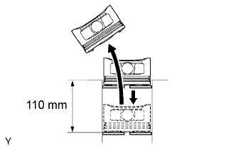 |
Using a piston, push the piston ring a little beyond the bottom of the ring travel, 110 mm (4.33 in.) from the top of the cylinder block.
 |
Using a feeler gauge, measure the end gap.
| Item | Specified Condition |
| No. 1 Compression Ring | 0.30 to 0.40 mm (0.0118 to 0.0157 in.) |
| No. 2 Compression Ring | 0.40 to 0.50 mm (0.0157 to 0.0197 in.) |
| Oil Ring (side rail) | 0.10 to 0.40 mm (0.00394 to 0.0157 in.) |
| Item | Specified Condition |
| No. 1 Compression Ring | 1.0 mm (0.0394 in.) |
| No. 2 Compression Ring | 1.1 mm (0.0433 in.) |
| Oil Ring (side rail) | 1.0 mm (0.0394 in.) |
| 25. INSPECT CONNECTING ROD SUB-ASSEMBLY |
 |
Using a rod aligner and feeler gauge, check the connecting rod alignment.
Check for bend.
 |
Check for twist.
| 26. INSPECT CRANKSHAFT |
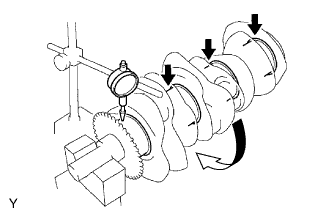 |
Using a dial indicator and V-blocks, measure the runout as shown in the illustration.
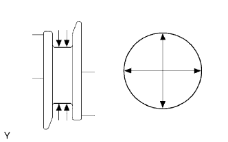 |
Using a micrometer, measure the diameter of each main journal.
Check each main journal for taper and out-of-round as shown in the illustration.
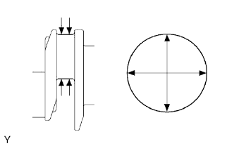 |
Using a micrometer, measure the diameter of each crank pin.
Check each crank pin for taper and out-of-round as shown in the illustration.
| 27. INSPECT CRANKSHAFT THRUST CLEARANCE |
 |
Using a dial indicator, measure the thrust clearance while prying the crankshaft back and forth with a screwdriver.
| 28. INSPECT CRANKSHAFT OIL CLEARANCE |
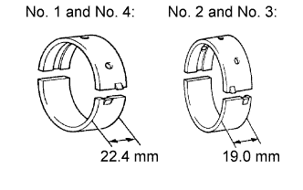 |
Clean each main journal and bearing.
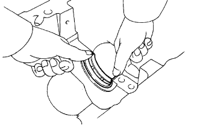 |
Align the bearing claw with the claw groove of the cylinder block, and push in the 4 upper bearings.
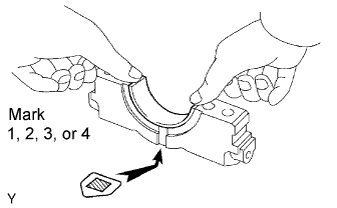 |
Align the bearing claw with the claw groove of the main bearing cap, and push in the 4 lower bearings.
Place the crankshaft on the cylinder block.
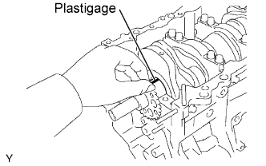 |
Lay a strip of Plastigage across each journal.
 |
Examine the front marks and numbers and set the crankshaft bearing caps on the cylinder block.
Apply a light coat of engine oil to the threads of the crankshaft bearing cap bolts.
Temporarily install the 8 crankshaft bearing cap bolts to the inside positions.
 |
Tighten the 2 bolts for each bearing cap until the clearance between the crankshaft bearing cap and the cylinder block becomes less than 6 mm (0.236 in.).
 |
Using a plastic-faced hammer, lightly tap the crankshaft bearing cap to ensure a proper fit.
 |
Apply a light coat of engine oil to the threads of the crankshaft bearing bolts and temporarily install the 8 crankshaft bearing cap bolts to the outside positions.
 |
Step 1:
Uniformly tighten the 16 bolts in several steps in the order shown in the illustration.
 |
Step 2:
Mark the front side of the crankshaft bearing cap bolts with paint.
Tighten the bearing cap bolts 90° in the order shown in step 1.
Check that the painted marks are now at a 90° angle to the front.
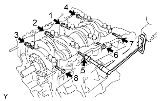 |
Install and uniformly tighten the 8 crankshaft bearing cap bolts in several steps in the sequence shown in the illustration.
Remove the crankshaft bearing caps.
 |
Step 1:
Uniformly loosen and remove the 8 bearing cap bolts in the sequence shown in the illustration.
 |
Step 2:
Uniformly loosen and remove the 16 bearing cap bolts in the sequence shown in the illustration.
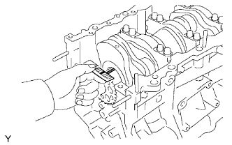 |
Measure the Plastigage at its widest point.
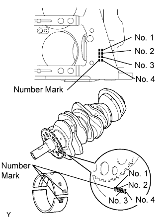 |
If replacing a bearing, replace it with one that has the same number. If the number of the bearing cannot be determined, select the correct bearing by adding together the numbers imprinted on the cylinder block and crankshaft, then refer to the table below for the appropriate bearing number. There are 5 sizes of standard bearings, marked "1", "2", "3", "4" and "5" accordingly.
| Cylinder block (A) + Crankshaft (B) | Use Bearing |
| 0 - 5 | "1" |
| 6 - 11 | "2" |
| 12 - 17 | "3" |
| 18 - 23 | "4" |
| 24 - 28 | "5" |
| Item | Mark | Specified Condition |
| Cylinder block main journal bore diameter (A) | "00" | 77.000 mm (3.03149 in.) |
| "01" | 77.001 mm (3.03152 in.) | |
| "02" | 77.002 mm (3.03156 in.) | |
| "03" | 77.003 mm (3.03160 in.) | |
| "04" | 77.004 mm (3.03164 in.) | |
| "05" | 77.005 mm (3.03168 in.) | |
| "06" | 77.006 mm (3.03172 in.) | |
| "07" | 77.007 mm (3.03176 in.) | |
| "08" | 77.008 mm (3.03180 in.) | |
| "09" | 77.009 mm (3.03184 in.) | |
| "10" | 77.010 mm (3.03188 in.) | |
| "11" | 77.011 mm (3.03192 in.) | |
| "12" | 77.012 mm (3.0396 in.) | |
| "13" | 77.013 mm (3.03200 in.) | |
| "14" | 77.014 mm (3.03204 in.) | |
| "15" | 77.015 mm (3.03208 in.) | |
| "16" | 77.016 mm (3.03211 in.) | |
| Crankshaft main journal diameter (B) | "00" | 71.999 to 72.000 mm (2.83460 to 2.83464 in.) |
| "01" | 71.998 to 71.999 mm (2.83456 to 2.83460 in.) | |
| "02" | 71.997 to 71.998 mm (2.83452 to 2.83456 in.) | |
| "03" | 71.996 to 71.997 mm (2.83448 to 2.83452 in.) | |
| "04" | 71.995 to 71.996 mm (2.83440 to 2.83448 in.) | |
| "05" | 71.994 to 71.995 mm (2.83440 to 2.83444 in.) | |
| "06" | 71.993 to 71.994 mm (2.83436 to 2.83440 in.) | |
| "07" | 71.992 to 71.993 mm (2.83432 to 2.83436 in.) | |
| "08" | 71.991 to 71.992 mm (2.83428 to 2.83432 in.) | |
| "09" | 71.990 to 71.991 mm (2.83424 to 2.83428 in.) | |
| "10" | 71.989 to 71.990 mm (2.83420 to 2.83424 in.) | |
| "11" | 71.988 to 71.989 mm (2.83416 to 2.83420 in.) |
| Mark | Specified Condition |
| "1" | 2.488 to 2.491 mm (0.0980 to 0.0981 in.) |
| "2" | 2.491 to 2.494 mm (0.0981 to 0.0982 in.) |
| "3" | 2.494 to 2.497 mm (0.0982 to 0.0983 in.) |
| "4" | 2.497 to 2.500 mm (0.0983 to 0.0984 in.) |
| "5" | 2.500 to 2.503 mm (0.0984 to 0.0985 in.) |
| 29. INSPECT CONNECTING ROD THRUST CLEARANCE |
 |
Using a dial indicator, measure the thrust clearance while moving the connecting rod back and forth.
| 30. INSPECT CONNECTING ROD OIL CLEARANCE |
Install the crankshaft bearing (Click here).
Install the crankshaft (Click here).
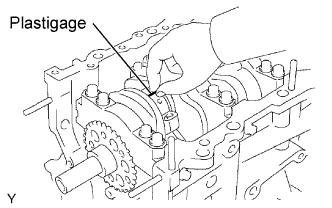 |
Lay a strip of Plastigage across the crank pin.
 |
Set the connecting rod cap so that the protrusion is facing the correct direction.
Apply a light coat of engine oil to the threads of the connecting rod cap bolts.
 |
Step 1:
Install and alternately tighten the bolts of the connecting rod cap in several steps.
|
Step 2:
Mark the front side of each connecting rod cap bolt with paint.
Tighten the bearing cap bolts in step 1 90°.
Remove the 2 bolts, connecting rod cap and lower bearing.
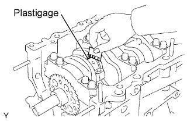 |
Measure the Plastigage at its widest point.
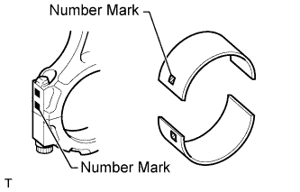 |
If replacing a bearing, replace it with one that has the same number marked on the connecting rod. There are 4 sizes of standard bearings, marked "1 ", "2", "3" and "4" accordingly.
| Mark | Specified Condition |
| 1 | 1.484 to 1.487 mm (0.05843 to 0.05854 in.) |
| 2 | 1.487 to 1.490 mm (0.05854 to 0.05866 in.) |
| 3 | 1.490 to 1.493 mm (0.05866 to 0.05878 in.) |
| 4 | 1.493 to 1.496 mm (0.05878 to 0.05900 in.) |
Remove the crankshaft (Click here).
Remove the crankshaft bearing.
| 31. INSPECT NO. 1 CHAIN SUB-ASSEMBLY |
 |
Using a spring scale, pull the No. 1 chain with a force of 147 N (15 kgf, 33.1 lbf) and measure the length of the No. 1 chain by using a vernier caliper.
| 32. INSPECT NO. 2 CHAIN SUB-ASSEMBLY |
|
Using a spring scale, pull the No. 2 chain with a force of 147 N (15 kgf, 33.1 lbf) and measure the length of the No. 2 chain by using a vernier caliper.
| 33. INSPECT CAMSHAFT TIMING GEAR ASSEMBLY |
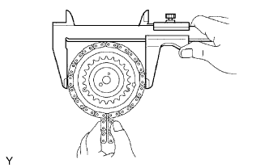 |
Wrap the No. 1 chain around the gear place for the No. 1 chain.
Using a vernier caliper, measure the timing gear with the No. 1 chain.
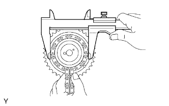 |
Wrap the No. 2 chain around the gear place for the No. 2 chain.
Using a vernier caliper, measure the timing gear with the No. 2 chain.
| 34. INSPECT CAMSHAFT TIMING SPROCKET |
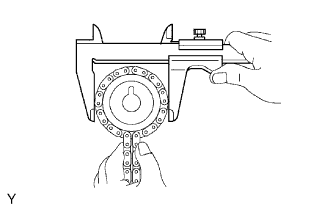 |
Wrap the No. 2 chain around the sprocket.
Using a vernier caliper, measure the camshaft timing sprocket diameter with the No. 2 chain.
| 35. INSPECT CRANKSHAFT TIMING SPROCKET |
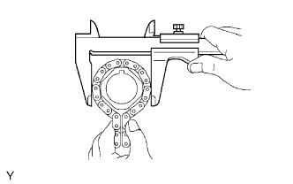 |
Wrap the No. 1 chain around the sprocket.
Using a vernier caliper, measure the crankshaft timing sprocket diameter with the No. 1 chain.
| 36. INSPECT NO. 1 IDLE GEAR |
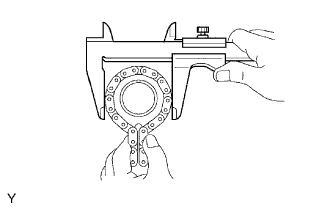 |
Wrap the No. 1 chain around the gear.
Using a vernier caliper, measure the No. 1 idle gear with the No. 1 chain.
| 37. INSPECT NO. 1 IDLE GEAR SHAFT OIL CLEARANCE |
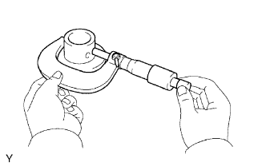 |
Using a micrometer, measure the No. 1 idle gear shaft diameter.
Using a caliper gauge, measure the inside diameter of the idle gear.
Subtract the idle gear shaft diameter measurement from the idle gear inside diameter measurement.
| 38. INSPECT NO. 1 CHAIN TENSIONER ASSEMBLY |
Move the stopper plate upward to release the lock. Push the plunger and check that it moves smoothly.
If necessary, replace the chain tensioner assembly.
| 39. INSPECT NO. 2 CHAIN TENSIONER ASSEMBLY |
Check that the plunger moves smoothly.
Measure the worn depth of the chain tensioner.
| 40. INSPECT NO. 3 CHAIN TENSIONER ASSEMBLY |
Check that the plunger moves smoothly.
Measure the worn depth of the chain tensioner.
| 41. INSPECT CHAIN TENSIONER SLIPPER |
Measure the worn depth of the chain tensioner slipper.
| 42. INSPECT NO. 1 CHAIN VIBRATION DAMPER |
Measure the worn depth of the No. 1 chain vibration damper.
| 43. INSPECT NO. 2 CHAIN VIBRATION DAMPER |
Measure the worn depth of the No. 2 chain vibration damper.
| 44. INSPECT EXHAUST MANIFOLD FOR FLATNESS |
Using a precision straightedge and feeler gauge, measure the warpage of the contact surface of the cylinder head.
| 45. INSPECT INTAKE MANIFOLD FOR FLATNESS |
Using a precision straightedge and feeler gauge, measure the warpage of the contact surface of the cylinder head and intake air surge tank.